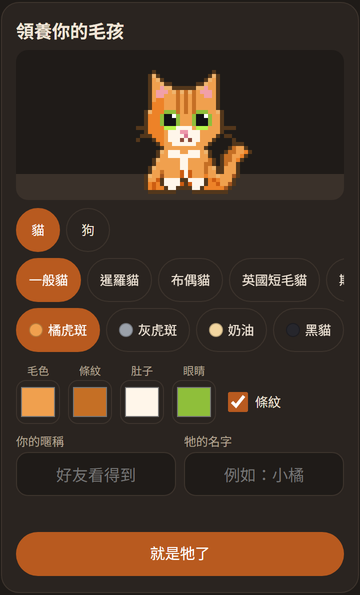
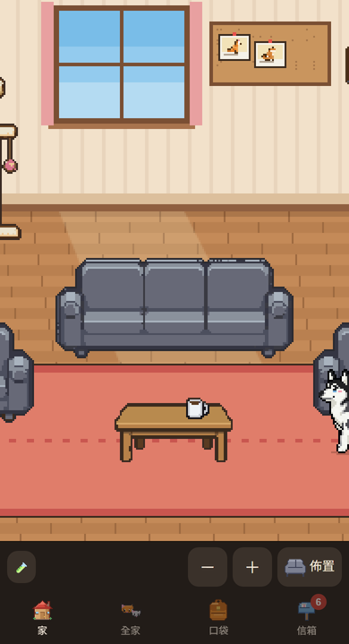
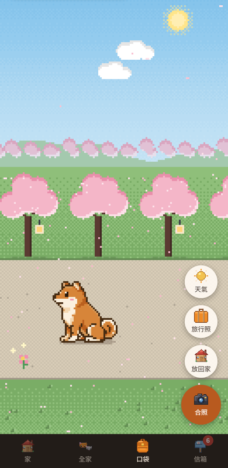
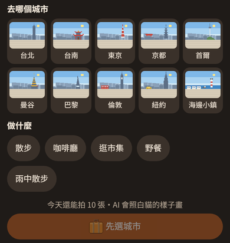
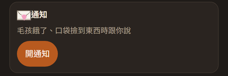

開始玩
只有手機
按〔開新帳號〕，收信箱驗證碼就好，接著建立第一隻毛孩。
已經有電腦版
用同一個帳號登入，電腦上的毛孩都在。也可以在電腦「🏠 全家在哪」掃 QR code 打開。
加到主畫面
iPhone：Safari 分享 →「加入主畫面」，「以網頁 App 打開」保持打開（才收得到通知）；第一次從主畫面打開要再登入一次。
在手機可以做什麼
畫面是手機版用範例資料拍的，實際的毛孩、名字以你的為準。

🐾 建立毛孩
選貓或狗、品種、花色，也能自己調顏色。已經有的毛孩可以〔換顏色〕。

🏠 家
摸摸、餵飯、佈置家具。按「叫來上班」，牠就出現在電腦上。

🎒 口袋
帶一隻出門散步，撿紀念品、跟牠合照。

📸 AI 旅行照
出門滿 1 小時，選城市、街景和做什麼，AI 照牠的樣子畫一張。

🔔 通知
肚子餓了、撿到東西會通知你；晚上 11 點到早上 8 點不吵你。
🌱 會長大、會餓
幼貓幼犬會慢慢長大；電腦沒開時一樣會餓，手機上餵就好。
小提醒
- 有電腦版的話，請更新到 v4.17.0 以上（舊版會把手機算好的飽足蓋回去）。
- 一個帳號在手機最多建立 10 隻；AI 旅行照每天最多 10 張。
- iPhone 收通知：iOS 16.4 以上，從主畫面打開的 DeskCat 才收得到。
- 好友的信件、禮物在〔信箱〕；存了哪些資料看隱私說明。